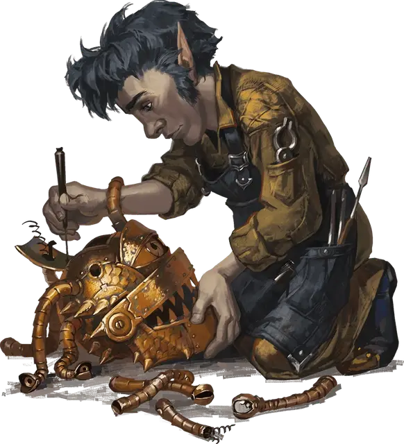

Скальный гном затворник
Rock Gnome Recluse
Маленький Гуманоид (Гном), хаотично-нейтральный

Класс Доспеха 10 (13 с доспехом мага)
Хиты 7 (2к6)
Скорость 25 футов
| мод | спас | ||
|---|---|---|---|
| СИЛ | 6 | −2 | −2 |
| ЛОВ | 11 | +0 | +0 |
| ТЕЛ | 10 | +0 | +0 |
| мод | спас | ||
|---|---|---|---|
| ИНТ | 15 | +2 | +2 |
| МДР | 10 | +0 | +0 |
| ХАР | 13 | +1 | +1 |
Навыки История +4, Магия +4
Чувства тёмное зрение 60 футов, пассивное Восприятие 10
Языки Общий, Гномий, Подземный
Опасность 1/4 (50 опыта)
Бонус мастерства +2
Особенности
Гномья хитрость. Гном совершает с преимуществом спасброски Интеллекта, Мудрости и Харизмы от магии.
Врождённое колдовство. Базовой характеристикой гнома является Интеллект (Сл спасброска от заклинания 11). Он может накладывать следующие заклинания, не нуждаясь в материальных компонентах:
• Заговоры (неограниченно): волшебная рука [mage hand], фокусы [prestidigitation], луч холода [ray of frost] (см. "Действия" ниже);
• 1 уровень (3 ячейки): обнаружение магии [detect magic], доспехи мага [mage armor], волшебная стрела [magic missile] (см. "Действия" ниже), щит [shield].
Действия
Волшебная стрела (Расходует ячейку заклинаний 1-го уровня). Гном создает три волшебных дротика. Каждый дротик поражает выбранное гномом существо в пределах 120 футов от него и наносит 3 (1к4 + 1) урона силовым полем.
Луч холода. Дальнобойная атака заклинанием: +4 к попаданию, дистанция 60 футов, одно существо. Попадание: 4 (1к8) урона холодом, и скорость цели снижается на 10 футов до начала следующего хода гнома.
Описание
Скальные гномы затворники скусны в тайных искусствах. Они используют свои магические таланты для создания всевозможных удивительных изобретений, очень немногие из которых работают по назначению.